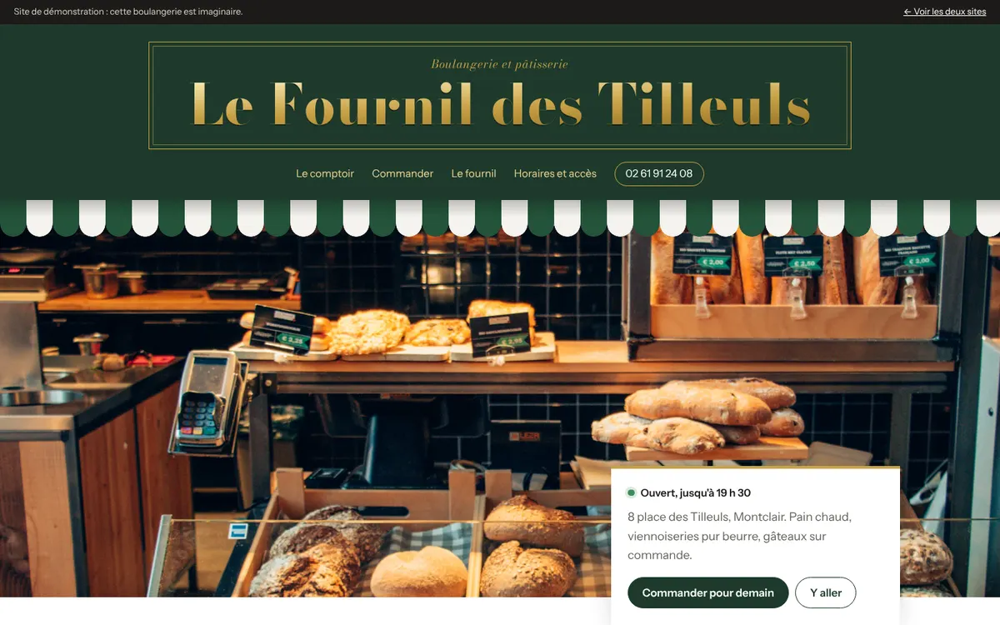
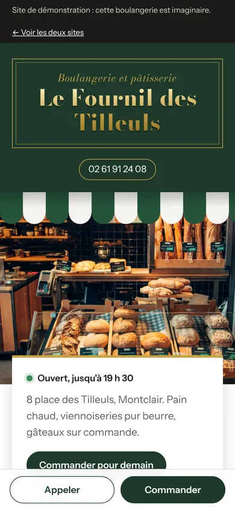

Le Fournil des Tilleuls
Boulangerie et pâtisserie
- L'enseigne façon devanture peinte, avec le store rayé.
- L'heure de la prochaine fournée, en direct : « la tradition sort du four à 16 h 30 ».
- Ouvert ou fermé, calculé à la minute près.
- La carte avec les prix, et le pain du mois qui change tout seul.
- Commande pour le lendemain, envoyée par SMS au boulanger.